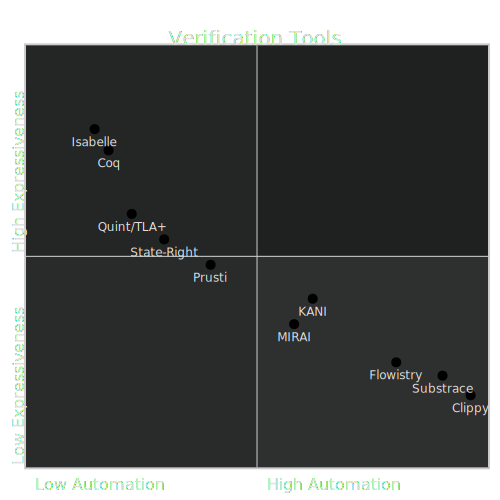

<!DOCTYPE html>
<html lang="en">

<head>
  <meta charset="utf-8" />
  <meta name="viewport" content="width=device-width, initial-scale=1.0, maximum-scale=1.0, user-scalable=no" />

  <title>Formal Methods for Rust</title>
  <link rel="shortcut icon" href="./../../../assets/favicon.ico" />
  <link rel="stylesheet" href="./../../../dist/reset.css" />
  <link rel="stylesheet" href="./../../../dist/reveal.css" />
  <link rel="stylesheet" href="./../../../assets/styles/PBA-theme.css" id="theme" />
  <link rel="stylesheet" href="./../../../css/highlight/shades-of-purple.css" />

  <link rel="stylesheet" href="./../../.././assets/styles/custom-classes.css" />

</head>

<body class="site">
  <header class="site-header">
    <!-- This logo is a link only on the watching server, not the production build -->
    <a href="">
      
    </a>
  </header>
  <main class="reveal">
    <article class="slides">
      <section  data-markdown><script type="text/template">

# Formal Methods for Rust
</script></section><section  data-markdown><script type="text/template">
## Outline

<pba-flex center>

1. Intro to Formal Methods
1. Landscape of Techniques for Rust
1. Focus on Kani: Bounded Model Checker
1. Applications to Substrate

</pba-flex>
</script></section><section ><section data-markdown><script type="text/template">
## Introduction to Formal Methods

#### _Story Time!_
</script></section><section data-markdown><script type="text/template">
### _Ariane 5 Rocket - Flight 501_


- in **1996**, the launcher rocket disintegrated 39 secs after take-off.
- **Failure**: An _overflow_, caused by a conversion from 64-bit to 16-bit floating point
- **Mistake**: reusing inertial reference platform of Ariane-4, where overflow cannot happen due to different operational conditions
- **Cost**: `$`500M payload, `$`8B development program

<aside class="notes"><p>Link to article: (<a href="https://www-users.cse.umn.edu/~arnold/disasters/ariane.html">https://www-users.cse.umn.edu/~arnold/disasters/ariane.html</a>)</p>
</aside></script></section><section data-markdown><script type="text/template">
## Software Correctness is _very_ important

> Program testing can be used to show the presence of bugs,<br/>but never to show their absence!
>
> --Edgard Dijkstra--

**_Hence, the necessity to go beyond testing_** <!-- .element: class="fragment" -->
</script></section><section data-markdown><script type="text/template">
## Formal Methods to the Rescue!

- Given a system (code) and Specification (behavior), verify/prove correctness with reasonable mathematical guarantees.
- **Traditionally**, costs and efforts were justifiable in _safety-critical_ software like avionics, nuclear reactors, medical imaging, etc.
- however, things have changed ...

<aside class="notes"><p>this is how Formal Methods were motivated; to prove the absence of Bugs! A bit of fear-mongering in my opinion.</p>
</aside></script></section><section data-markdown><script type="text/template">
## It is no longer Rocket Science!

- AWS formally verifies Key-Value storage nodes in Amazon S3 (Rust Implementation).
- Meta detects resource leaks and race conditions in Android apps
- Uber uses static analysis to find Null-pointer exceptions
- Ethereum's Beacon chain and Tendermint consensus formally verified for safety and liveness guarantees

<aside class="notes"><ul>
<li>Personally think of formal methods as a more systematic way of detecting bugs.</li>
<li>Ideally, verifying if your property holds on all possible inputs.</li>
</ul>
</aside></script></section><section data-markdown><script type="text/template">
## Formal Methods Today

From being theoretical research interests<br/> to delivering practical cost-effective tools

<pba-flex center>

- goals more focused, promises less lofty
- verification tools more efficient
- combination of analysis techniques

</pba-flex>

<aside class="notes"><ul>
<li>Limiting attention to a particular class of bugs, resource leaks, data-races, etc.</li>
<li>Drastic Speed-up in Underlying Constraint-Solver engines.
For example, Z3 by microsoft, can solve constraints with billions of variables.</li>
<li>Unified theory with blurring lines; Combining both static and dynamic techniques.</li>
</ul>
</aside></script></section><section data-markdown><script type="text/template">
## More like _Light-weight Formal Methods_

1. Rigorously **detecting bugs** → proving overall correctness of system.
1. Developer-centric **Usability** (e.g. workflow integration)

<aside class="notes"><ul>
<li>Realized the importance of Developer experience.</li>
<li>No more obscure logic that the developer has to learn to write specifications.</li>
<li>You will see how intuitive it is to verify code.</li>
</ul>
</aside></script></section><section data-markdown><script type="text/template">
## Formal Methods ↔ Blockchains

**Hammer finally found the nail!**

- Lot at stake, justifies the cost and efforts
- Business logic is compact and modular, within limits

<aside class="notes"><ul>
<li>Reputation along with money at stake.</li>
<li>A simple android app has 100k java classes.
Techniques are not scalable on large codebases.</li>
<li>Complexity of runtime business logic is magnitude lower.
Lot of interest in Smart Contract verification.</li>
<li>Check out Certora, Echidna, Securify, and more <a href="https://ethereum.org/en/developers/docs/smart-contracts/formal-verification/">here</a></li>
</ul>
</aside></script></section><section data-markdown><script type="text/template">
## Key Takeaways

<pba-flex center>

**_Formal Methods are..._**

- **Not a Panacea** but can improve software quality
- Getting more and more **accessible**
- Useful for increasing **reliability and security** of blockchains
  </pba-flex>

<aside class="notes"><ul>
<li><a href="https://web.archive.org/web/20230209000724/www.pl-enthusiast.net/2017/10/23/what-is-soundness-in-static-analysis/">Great blog</a> that explains the trade-offs between soundness and tractability</li>
</ul>
</aside></script></section></section><section ><section data-markdown><script type="text/template">
<!-- .slide: data-background-color="#4A2439" -->

## Tools Landscape



<aside class="notes"><p>Links to listed tools</p>
<ul>
<li><a href="https://isabelle.in.tum.de/">Isabelle</a></li>
<li><a href="https://coq.inria.fr/">Coq</a></li>
<li><a href="https://github.com/tlaplus">TLA+</a></li>
<li><a href="https://github.com/stateright/stateright">StateRight</a></li>
<li><a href="https://www.pm.inf.ethz.ch/research/prusti.html">Prusti</a></li>
<li><a href="https://github.com/model-checking/kani">Kani</a></li>
<li><a href="https://github.com/facebookexperimental/MIRAI">MIRAI</a></li>
<li><a href="https://github.com/willcrichton/flowistry">Flowistry</a></li>
<li><a href="https://github.com/kaiserkarel/substrace">Substrace</a></li>
<li><a href="https://github.com/rust-lang/rust-clippy">Clippy</a></li>
</ul>
</aside></script></section><section data-markdown><script type="text/template">
## Tools Landscape

<pba-cols>
<pba-col center>


</pba-col>

<pba-col center>

#### Quint/ State-Right (Model-checkers)

- Humongous effort modelling the system & specifying properties
- Abstraction gap
- Reason about complex properties: safety & liveness of consensus mechanism

</pba-col>
</pba-cols>

<aside class="notes"><ul>
<li>Design-level, verifying protocol design.</li>
<li>Always a discrepancy in your model and actual code.</li>
<li>Safety: nothing bad ever happens; no two honest nodes agree on different state</li>
<li>Liveness: something good eventually happens; eventually 2/3rds reach consensus</li>
</ul>
</aside></script></section><section data-markdown><script type="text/template">
## Tools Landscape

<pba-cols>
<pba-col center>


</pba-col>

<pba-col center>

#### Static Analyzers

- Code-level
- Information/ dataflow properties; access control for code;
- Specify expected behavior (properties).
  Roundtrip property: decode (encode (x)) == x
- Default checks: bugs like arithmetic overflow, out-of-bound access panics

</pba-col>
</pba-cols>

<aside class="notes"><ul>
<li>Eg. for code access control: ensure that certain sensitive parts of runtime are only accessible by Root origin</li>
<li>MIRAI is developed by Meta uses technique called abstract interpretation;
specifically useful for detecting panics statically and information flow properties</li>
<li>Kani: we will dive deeper soon</li>
</ul>
</aside></script></section><section data-markdown><script type="text/template">
## Tools Landscape

<pba-cols>
<pba-col center>


</pba-col>

<pba-col center>

#### Linters

- Code-level
- Checks for code smells
- Other syntactic Properties

</pba-col>
</pba-cols>

<aside class="notes"><ul>
<li><a href="https://github.com/KaiserKarel/substrace">Substrace</a> is a linter specifically for Substrate</li>
<li>Flowistry allows you to track dependency between variables; slices only the relevant portion for a given location.</li>
</ul>
</aside></script></section></section><section  data-markdown><script type="text/template">
<!-- .slide: data-background-color="#4A2439" -->

# Our Focus: [Kani](https://github.com/model-checking/kani)
</script></section><section ><section data-markdown><script type="text/template">
## Kani: Model Checking tool for Rust

- [Open-source Rust verifier](https://github.com/model-checking/kani) by AWS
- Underlying technique used: Bounded Model Checking
- Can be used to _prove_:
  - Absence of arithmetic overflows
  - Absence of runtime errors (index out of bounds, panics)
  - User Specified Properties (enhanced PropTesting)
  - Memory safety when using unsafe Rust
- Provides a concrete test-case triggering the bug if verification fails

<aside class="notes"><p>Link to Bounded Model Checking paper for interested folks <a href="https://www.cs.cmu.edu/~emc/papers/Books%20and%20Edited%20Volumes/Bounded%20Model%20Checking.pdf">here</a>.
For example when you are accessing/modifying mutable static variable</p>
</aside></script></section><section data-markdown><script type="text/template">
### _Lets see some Magic first_

> Demo of the Rectangle-Example
</script></section><section data-markdown><script type="text/template">
## Proof Harness

<pba-col centre>

```rust
use my_crate::{function_under_test, meets_specification, precondition};

#[kani::proof]
fn check_my_property() {
   // Create a nondeterministic input
   let input = kani::any();

   // Constrain it according to the function's precondition
   kani::assume(precondition(input));

   // Call the function under verification
   let output = function_under_test(input);

   // Check that it meets the specification
   assert!(meets_specification(input, output));
}
```

<!-- .element: style="font-size:0.62em"-->

- Kani tries to prove that all valid inputs produce outputs that meet specifications, without panicking.
- Else, Kani generates a trace that points to the failure.

</pba-col>
</script></section><section data-markdown><script type="text/template">
Property: `decode(encode(x)) == x`

<pba-cols>
<pba-col center>

Test

```rust
#[cfg(test)]
fn test_u32 {
  let val: u16 = 42;
  assert_eq!(u16::decode(&mut
    val.encode()[..]).unwrap(), val)
}
```

fixed value `42`

</pba-col>

<pba-col center>

Fuzzing

```rust
#[cfg(fuzzing)]
fuzz_target!(|data: &[u8]|) {
  let val = u16::arbitrary(data);
  assert_eq!(u16::decode(&mut
    val.encode()[..]).unwrap(), val)
}
```

multiple random values of `u16`

</pba-col>
</pba-cols>

<pba-col center>

Kani Proof

```rust
#[cfg(kani)]
#[kani::proof]
fn proof_u32_roundtrip {
  let val: u16 = kani::any();
  assert_eq!(u16::decode(&mut
    val.encode()[..]).unwrap(), val)
}
```

verifies exhaustively all values of `u16`
</pba-col>
</script></section><section data-markdown><script type="text/template">
### Under the Hood: Bounded Model Checking

#### Idea:

- Search for counterexamples in (bounded) executions paths
- However, this search is an NP-hard problem

#### Method:

- Efficiently reduce problem to a Constraint Satisfaction (SAT) problem
- verification reduced to problem of searching satisfiable assignment to a SAT formula.
- leverages highly optimized SAT solvers making the search tractable.

<aside class="notes"><p>Kani uses miniSAT as the backend engine; a lot of other verification tools use Z3 solver.</p>
</aside></script></section><section data-markdown><script type="text/template">
### Translation to constraints

<pba-cols>

<pba-col centre>

#### Code

```rust
fn foo(x: i32) -> i32 {
    let mut y: i32 = 8;
    let mut w: i32 = 0;
    let mut z: i32 = 0;
    if x != 0 {
        z -= 1;
    } else {
        w += 1;
    }
    assert!(z == 7 || w == 9);
    w+z
}
```

</pba-col>

<pba-col centre>

#### Constraints

```rust
y = 8,
z = x? y-1: 0,
w = x? y+1: 0,
z != 7 /\ w != 9 (negation of the assert condition)
```

- Constraints fed into a Solver (minisat)
- For no value of `x` the constraints hold $\implies$ Assert conditions verified
- Else the solver found a failing test (counterexample)

<!-- show the number of clauses and variables used in the formula in the demo-->

</pba-col>
</pba-cols>
</script></section><section data-markdown><script type="text/template">
## How does it handle loops?

- _Bounded_ in BMC to the rescue!
- Loops are unwound up to a certain bounded depth $k$, else the verification does not terminate.
- Determining the _sweet-spot_ $k$ is a trade-off between _tractability_ and _verification confidence_ .
</script></section><section data-markdown><script type="text/template">
## Demo: Unwinding Loops

```rust
fn initialize_prefix(length: usize, buffer: &mut [u8]) {
    // Let's just ignore invalid calls
    if length > buffer.len() {
        return;
    }

    for i in 0..=length {
        buffer[i] = 0;
    }
}

#[cfg(kani)]
#[kani::proof]
#[kani::unwind(1)] // deliberately too low
fn check_initialize_prefix() {
    const LIMIT: usize = 10;
    let mut buffer: [u8; LIMIT] = [1; LIMIT];

    let length = kani::any();
    kani::assume(length <= LIMIT);

    initialize_prefix(length, &mut buffer);
}
```

<!-- .element: style="font-size:0.62em"-->
</script></section><section data-markdown><script type="text/template">
## Dealing with Loops: Summary

**Process:**

- Start with unwinding $k$ times
- If no bug is found, increase $k$ until either:
  - A bug is found
  - verifier times-out
  - predetermined upper-bound $N$ for $k$ is reached
</script></section><section data-markdown><script type="text/template">
## Implementing Arbitrary for custom type

```rust
use arbitrary::{Arbitrary, Result, Unstructured};

#[derive(Copy, Clone, Debug)]
pub struct Rgb {
    pub r: u8,
    pub g: u8,
    pub b: u8,
}

impl<'a> Arbitrary<'a> for Rgb {
    fn arbitrary(u: &mut Unstructured<'a>) -> Result<Self> {
        let r = u8::arbitrary(u)?;
        let g = u8::arbitrary(u)?;
        let b = u8::arbitrary(u)?;
        Ok(Rgb { r, g, b })
    }
}
```
</script></section></section><section  data-markdown><script type="text/template">
## Exercise

> Verify [Fixed-width](https://github.com/paritytech/parity-scale-codec/blob/master/src/codec.rs) & [Compact](https://github.com/paritytech/parity-scale-codec/blob/master/src/compact.rs) Encoding for integer types in SCALE.

<br/>
<br/>

**Open Ended properties!**

- _RoundTrip_: `Decode (Encode (x)) == x`
- `DecodeLength(x) == Decode(x).length()`
- `EncodeAppend(vec,item) == Encode(vec.append(item))`
- ......

<aside class="notes"><ul>
<li>Potentially, we might play around with a few of these properties during a workshop this weekend.</li>
</ul>
</aside></script></section><section  data-markdown><script type="text/template">
<!-- .slide: data-background-color="#4A2439" -->

# More Verification

# Less Bugs

<br/>
<br/>
<br/>

**_Questions?_**
</script></section>
    </article>
  </main>

  <script src="./../../../dist/reveal.js"></script>

  <script src="./../../../plugin/markdown/markdown.js"></script>
  <script src="./../../../plugin/highlight/highlight.js"></script>
  <script src="./../../../plugin/zoom/zoom.js"></script>
  <script src="./../../../plugin/notes/notes.js"></script>
  <script src="./../../../plugin/math/math.js"></script>

  <script src="./../../../assets/plugin/mermaid.js"></script>
  <script src="./../../../assets/plugin/mermaid-theme.js"></script>

  <script src="./../../../assets/plugin/chart/chart.js"></script>
  <script src="./../../../assets/plugin/chart/chart.min.js"></script>

  <script src="./../../../assets/plugin/tailwindcss.min.js"></script>

  <script>
    function extend() {
      var target = {};
      for (var i = 0; i < arguments.length; i++) {
        var source = arguments[i];
        for (var key in source) {
          if (source.hasOwnProperty(key)) {
            target[key] = source[key];
          }
        }
      }
      return target;
    }

    // default options to init reveal.js
    var defaultOptions = {
      controls: true,
      progress: true,
      history: true,
      center: true,
      transition: 'default', // none/fade/slide/convex/concave/zoom
      slideNumber: true,
      mermaid: {
        startOnLoad: false,
        logLevel: 3,
        theme: 'base',
        themeVariables: {
          primaryColor: purple,
          primaryTextColor: white,
          primaryBorderColor: pink,
          lineColor: pink,
          secondaryColor: lightPurple,
          tertiaryColor: lightPurple,
        },
      },
      chart: {
        defaults: {
          color: 'lightgray', // color of labels
          scale: {
            beginAtZero: true,
            ticks: { stepSize: 1 },
            grid: { color: "lightgray" }, // color of grid lines
          },
        },
        line: { borderColor: ["#ccc", "#E6007A", "#6D3AEE"], "borderDash": [[5, 10], [0, 0]] },
        bar: { backgroundColor: ["#ccc", "#E6007A", "#6D3AEE"] },
      },
      plugins: [
        RevealMarkdown,
        RevealHighlight,
        RevealZoom,
        RevealNotes,
        RevealMath,
        RevealMermaid,
        RevealChart
      ]
    };

    // options from URL query string
    var queryOptions = Reveal().getQueryHash() || {};

    var options = extend(defaultOptions, {"width":1400,"height":900,"margin":0,"minScale":0.2,"maxScale":2,"transition":"none","controls":true,"progress":true,"center":true,"slideNumber":true,"backgroundTransition":"fade"}, queryOptions);
  </script>


  <script>
    Reveal.initialize(options);
  </script>
</body>

</html>